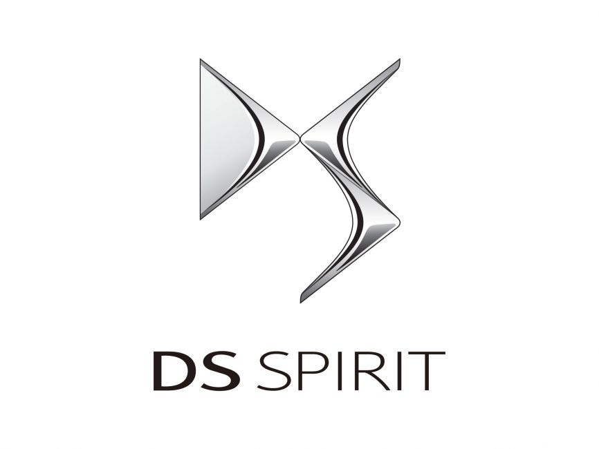

 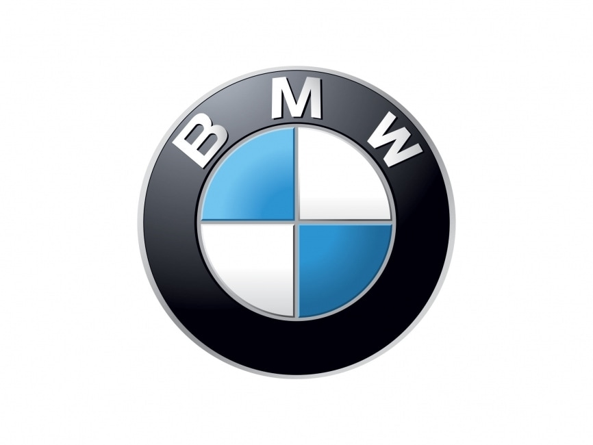
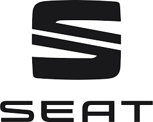
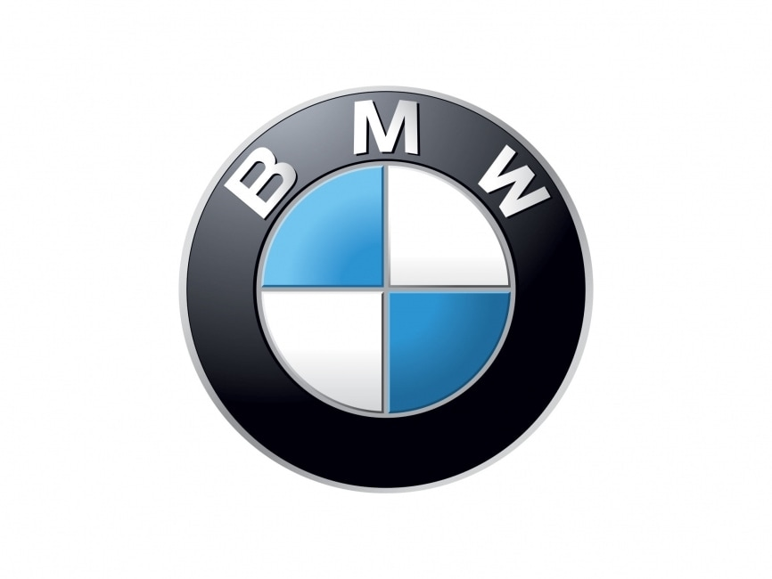
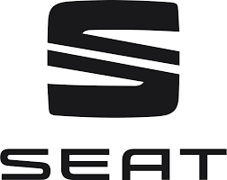
 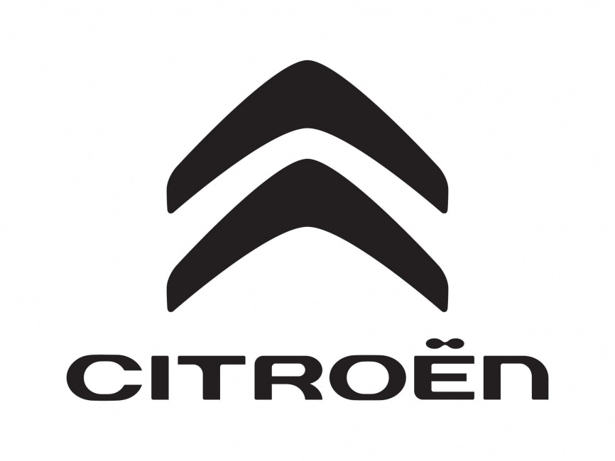
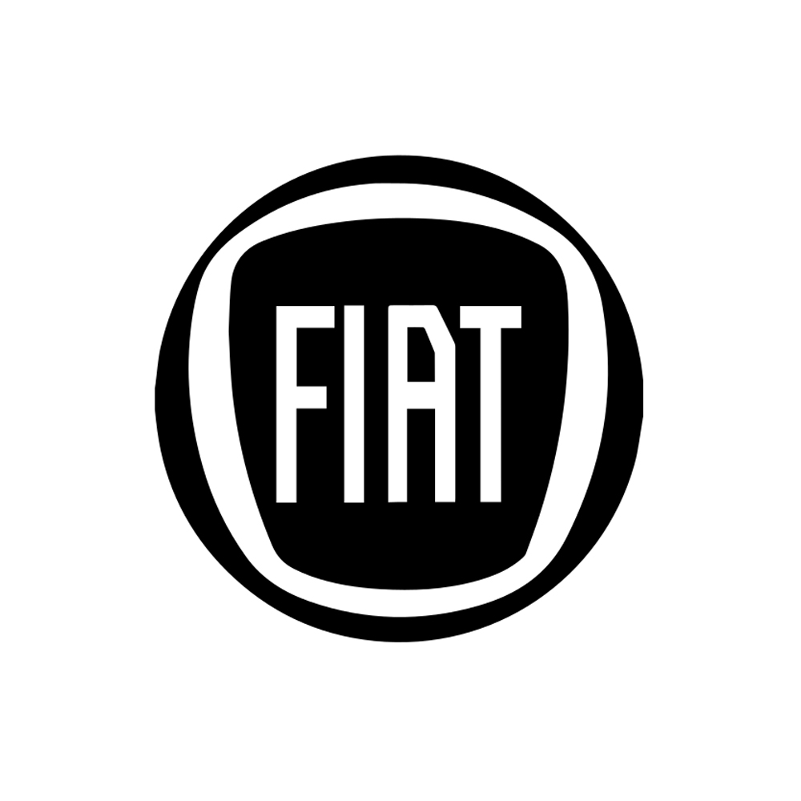
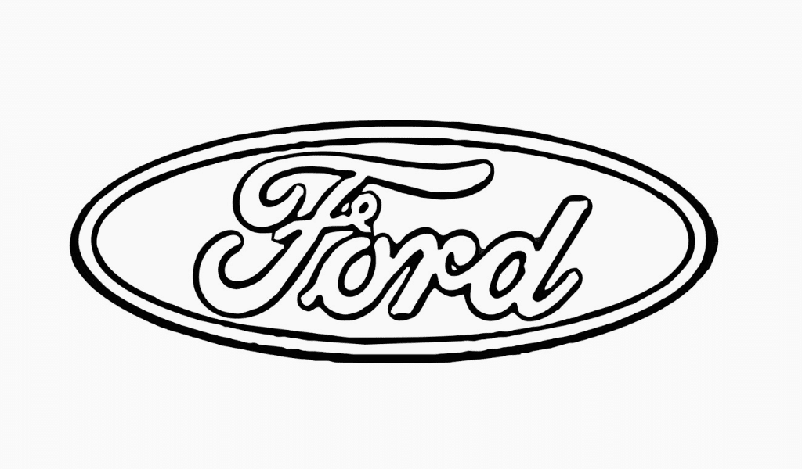
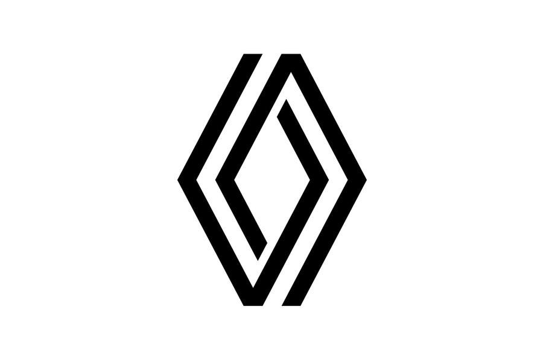
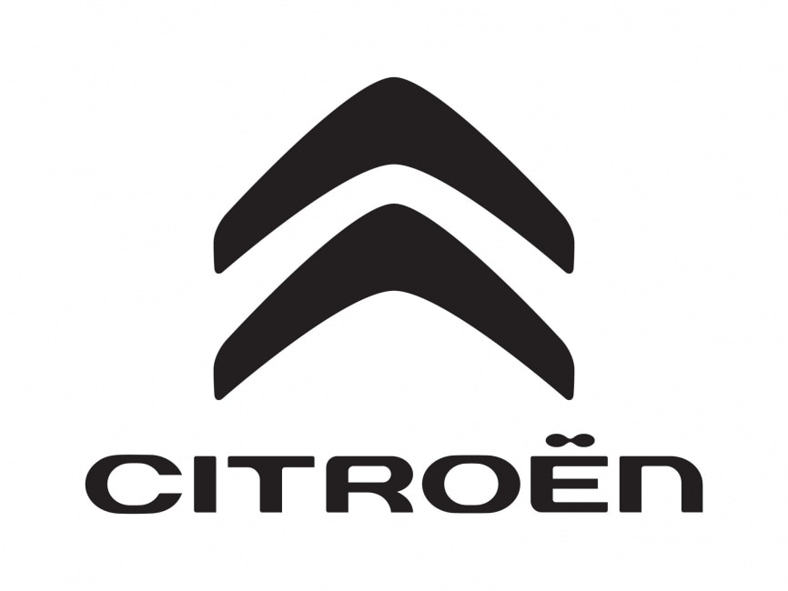
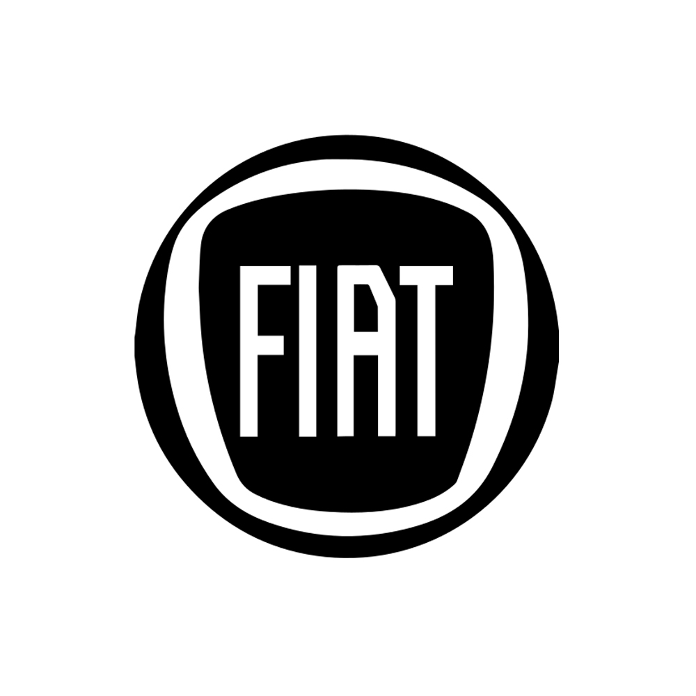
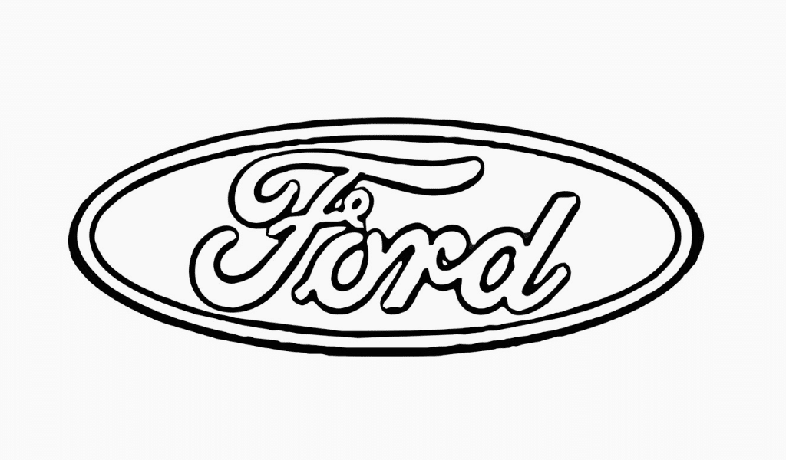
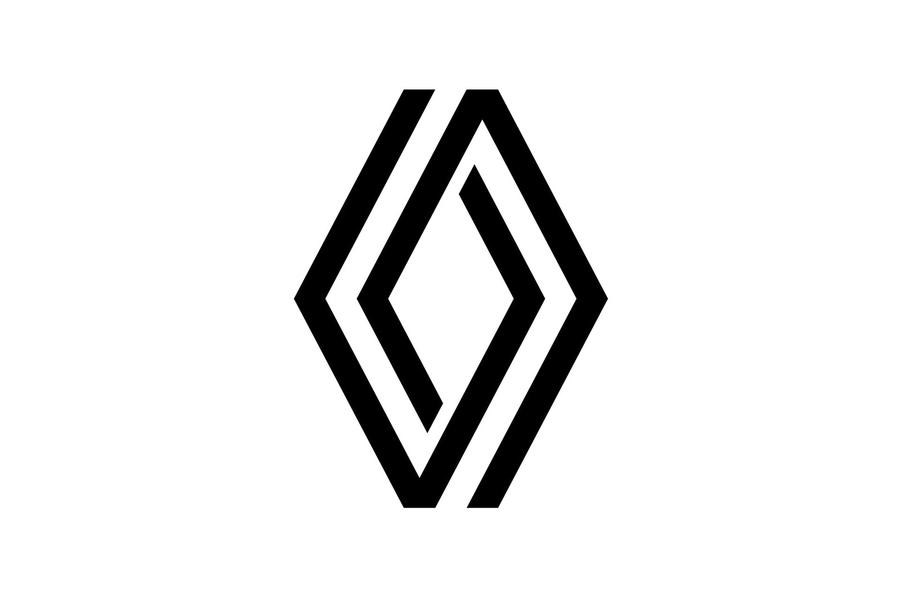

.png)
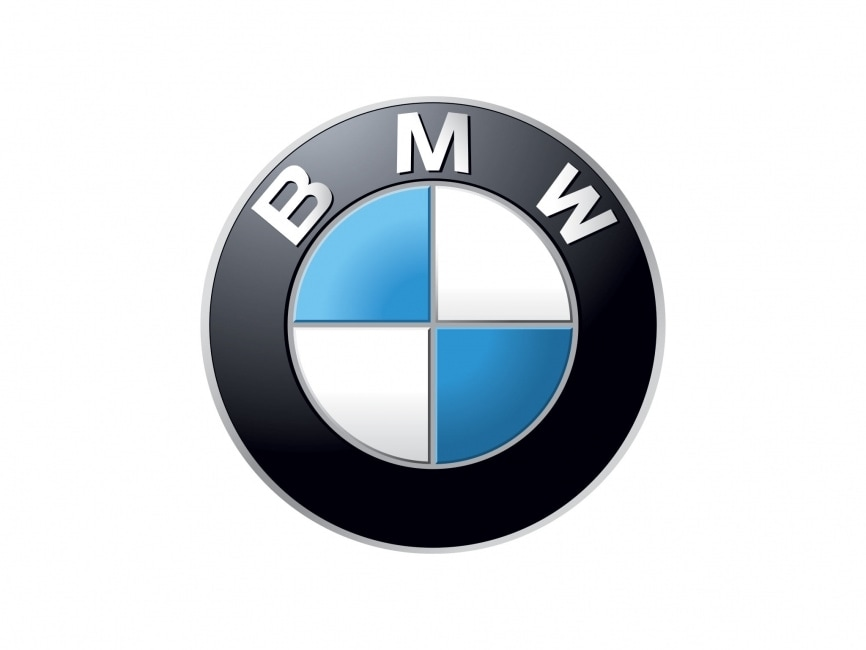
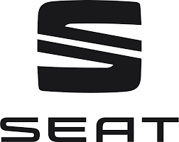
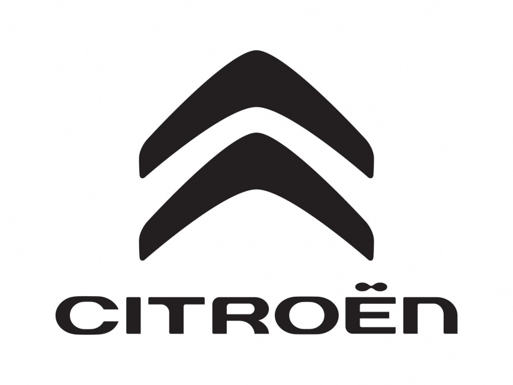
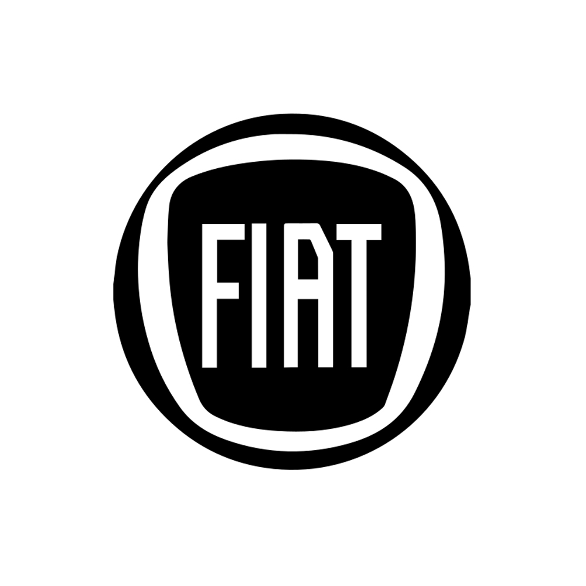
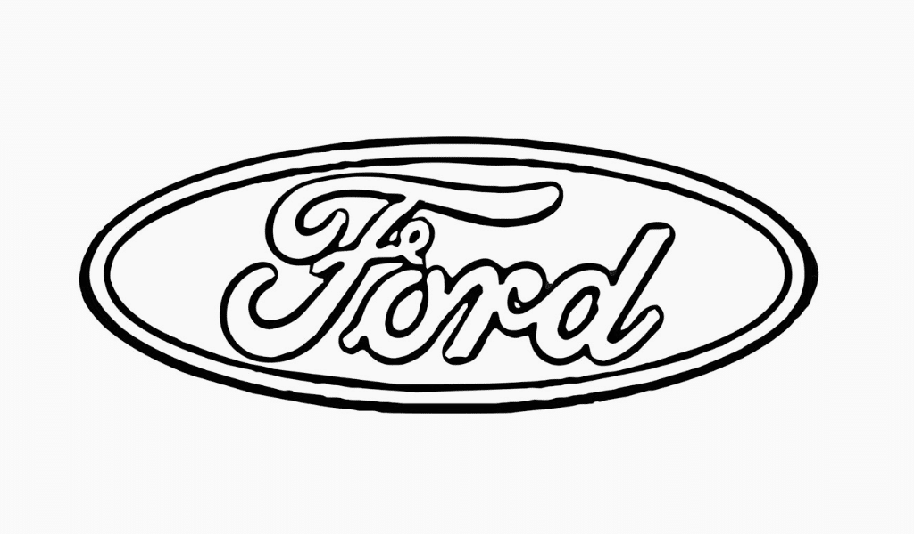
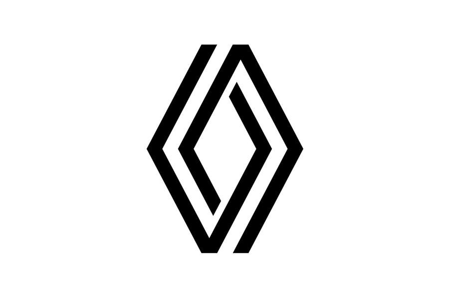
Sonunda tatil geldi! Ama siz tatile çıkıp dinlenecekken aracınızın baş etmesi gereken pek çok şey vardır. Daha fazla yük, yüksek hızlar, sıcak hava ve uzun yolculuklar araç için büyük birer gerilim kaynağıdır. Aracınızın gideceğiniz yere sizi güvenle götürmesini sağlamak için yola çıkmadan önce birkaç önemli hususa dikkat etmek yararlı olacaktır:
Geleneksel fırçaların aracınızın boyasına zarar verme ihtimali olduğu için aracınızı götürdüğünüz araç yıkama merkezlerinin mümkün olduğunca modern olduğundan emin olun. Aracınızı kendiniz yıkamayı tercih ediyorsanız, yüksek basınçlı yıkama aparatını dikkatli bir şekilde tutun; boyanın, lastiklerin, farların ve tekerleklerin zarar görmemesi için püskürtme ucunu her zaman yeterli uzaklıkta tutun.
Aşağıdaki parçaların temizliği ve bakımı düzenli olarak yapılmalıdır:
Yanlış ayarlanan farlar sadece sürücü için değil, diğer yol kullanıcıları açısından da tehlike arz eder. Yanlış ayarlanan farlar sadece yeterli aydınlatmayı sağlayamamakla kalmaz, aynı zamanda karşıdan gelen araçların sürücülerinin de gözünü alabilir. Bu yüzden her zaman güvenli sürüş sağlamak için farlarınızı düzenli aralıklarla kontrol ettirmek önemlidir.
Ön ve arka sis lambaları yoldaki trafik güvenliğini artırır, ancak bu durum bazı ön koşullara bağlıdır.Dikkat edilmesi gereken noktalar:
Aracınızda genellikle yüksek basınçlı temizleyici mi kullanıyorsunuz? Eğer öyleyse lastikleri temizlerken özellikle dikkatli olun. Yakın mesafeden konsantre sıcak su püskürtülmesi, darbe anındaki basıncın lastik malzemesi sıcaklığında artışa ve kauçukta küçük kabarcıklar oluşması nedeniyle kauçuğun zayıflamasına yol açması yüzünden önemli hasarlara meydan verebilir. Zayıflamış kauçuk, ağır yük altında veya yüksek hızlarda lastiklerin aniden patlaması riskine yol açar.
Lastikleri temizlerken dikkat etmesi gereken noktalar:
Lastikler yakıt tüketiminde önemli bir rol oynar. Bu, lastik seçimiyle başlar; dönme direnci ne kadar yüksek olursa, o kadar fazla yakıt tüketilir. Bu nedenle, satın alırken lastiklerinizin özellikleri hakkında bilgi edinin. Monte edildikten sonra, esas olarak önemli olan doğru hava basıncıdır. Çünkü lastik basıncı ideal değerden sadece 0,2 bar daha düşük olduğunda bile yakıt tüketimi yüzde 1 artar. Buna karşılık, hafifçe yükseltilmiş bir basınç değeri ile yakıttan tasarruf edilebilir. Lastik basıncını her iki yakıt ikmalinde bir kontrol edin ve gerekirse ayarlayın
Bagaj bölmesinde daima bulundurmanız gerekenler arasında ilk yardım çantası, yedek lastik, kriko ve bijon anahtarı gibi temel araç gereçler bulunmalıdır. Ayrıca, yansıtıcı bir uyarı üçgeni ve fosforlu yelek gibi güvenlik ekipmanları da acil durumlar için hayati önem taşır. Bu malzemeler, beklenmedik bir arıza ya da kaza anında güvenliğinizi sağlamaya yardımcı olur ve yolda kalmanız durumunda hızlı bir çözüm sunar.
Diğer acil durumlarda olduğu gibi sakin kalmalısınız. Aracınız hala hareket edebilir durumdaysa, acil durum ışıklarını açın ve hemen trafik akışını engellemediği güvenli bir yere alın. Yoldaki bir arıza cebi veya emniyet şeridi bunu için uygundur.
Çocukların araçtan tek başlarına inmesine asla izin vermemelisiniz. Trafiğin akışını engellememek veya size başka bir aracın çarpmamasını sağlamak için hemen güvenli bir yere (örneğin bir bariyerin arkasında) ilerleyin. Varsa, arkadan gelen sürücülerin dikkatini çekmek için bir kaza mahallinin yaklaşık 100 ila 150 adım gerisinde yol kenarına bir uyarı üçgeni yerleştirerek kaza mahallini güvence altına alın. Üçgeni yerleştirirken dikkatli olduğunuzdan ve yüksek seviyede görünürlüğe sahip bir yelek giydiğinizden emin olun.
Bir kazaya karıştıktan sonra ne olur? Talepte bulunabileceğiniz durumlar, kazanın koşullarına, suçlu tarafın kim olduğuna ve mevcut sigorta kapsamına bağlıdır. Tam da bu nedenle öncelikle tüm araç verilerini ve kişisel verileri ve kanıtları güvence altına almak için kazayla ilgili tüm ilgili olguları toplamak şarttır. Bu, kaza yerine çağrılan polise destek olur veya bir kaza raporunun hazırlanmasında yardımcı olur. Daha sonra bunlar, meydana gelen veya neden olunan hasarın karşılanması amacıyla ya sizin sorumluluk sigortası şirketinize ya da trafik kazasına karışan kişilerin otomobil sorumluluk sigortası şirketine sunulabilir.
Araçlardaki sürekli artan elektrikli ekipman sayısı, start/stop sistemleri ya da frenleme enerjisi geri kazanımı gibi yeni teknolojiler, yüksek performanslı aküler gerektirir. Örneğin klasik güç kaynakları, sık motor çalıştırma nedeniyle kısa sürede yorulur.
Bir trafik kazası durumunda, aracınızda mutlaka ilk yardım çantası, yangın söndürücü ve yansıtıcı uyarı üçgeni gibi ekipmanlara sahip olmalısınız. Ayrıca, fosforlu yelek giyerek diğer sürücüler tarafından fark edilmeniz güvenliğinizi artıracaktır. Bu ekipmanlar, kazanın ardından hızlı ve güvenli bir şekilde müdahale etmenizi sağlar.
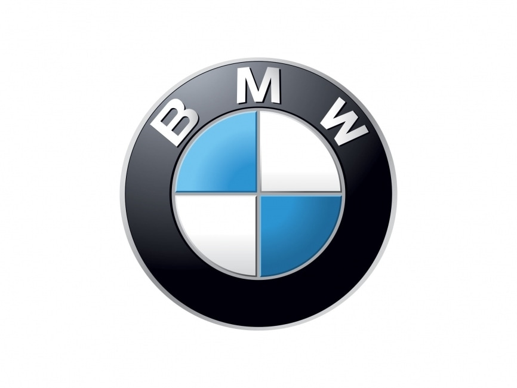
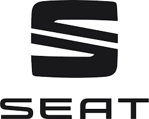
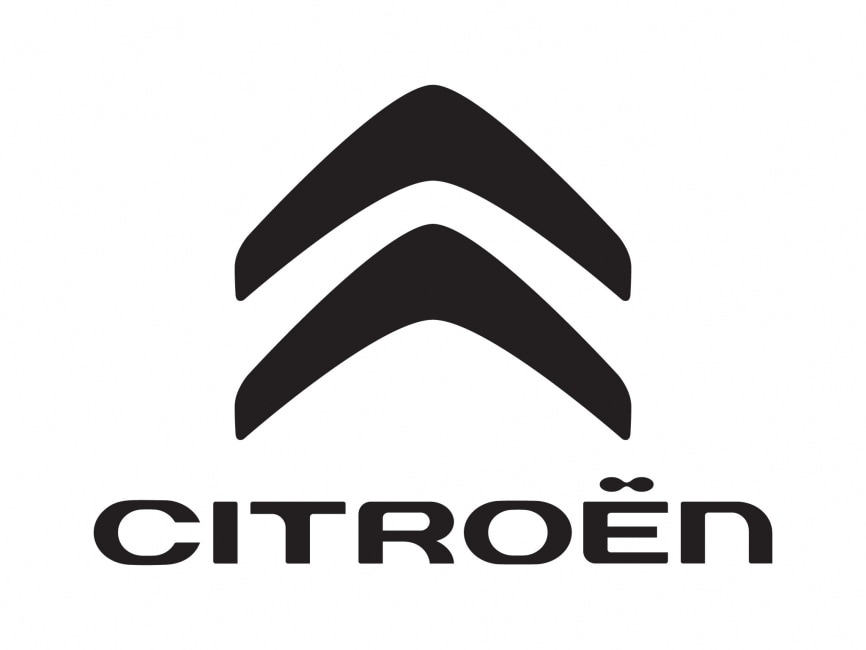
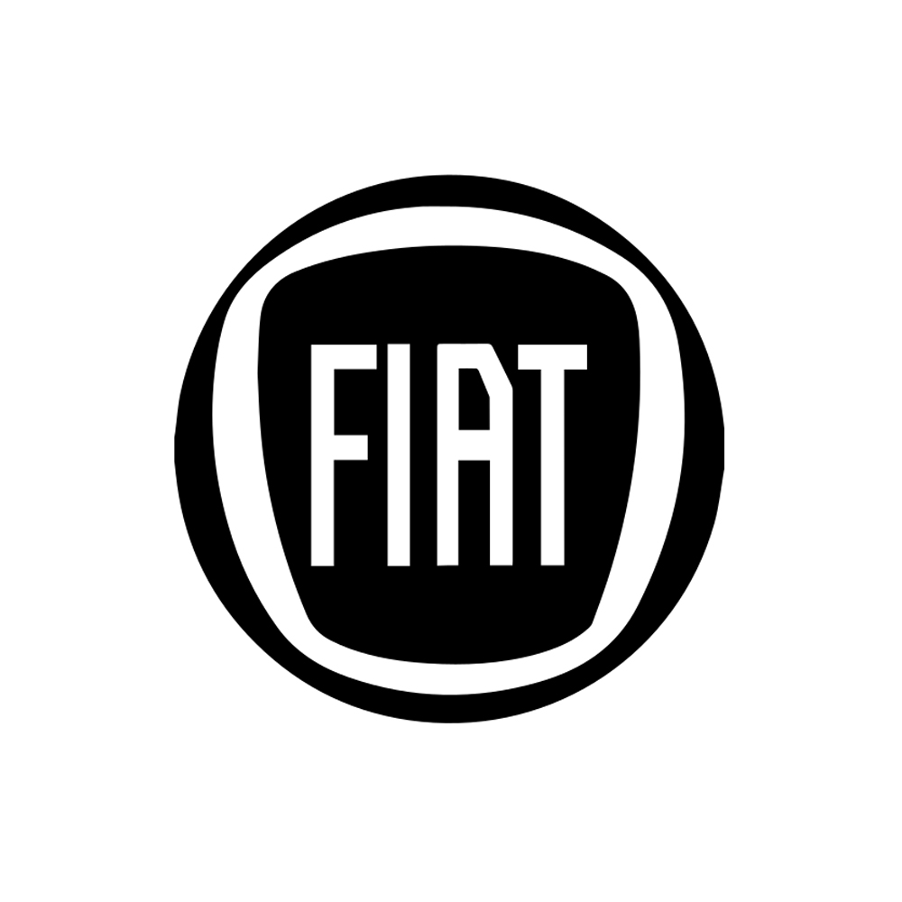
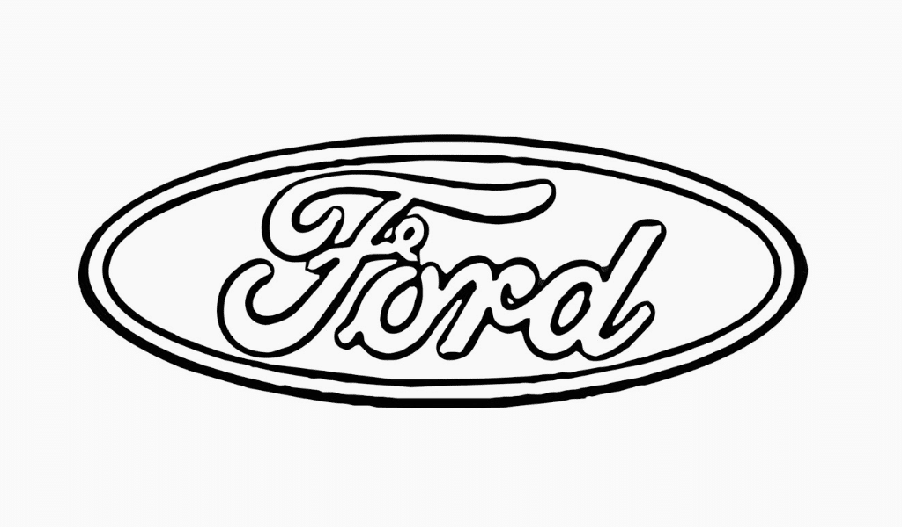
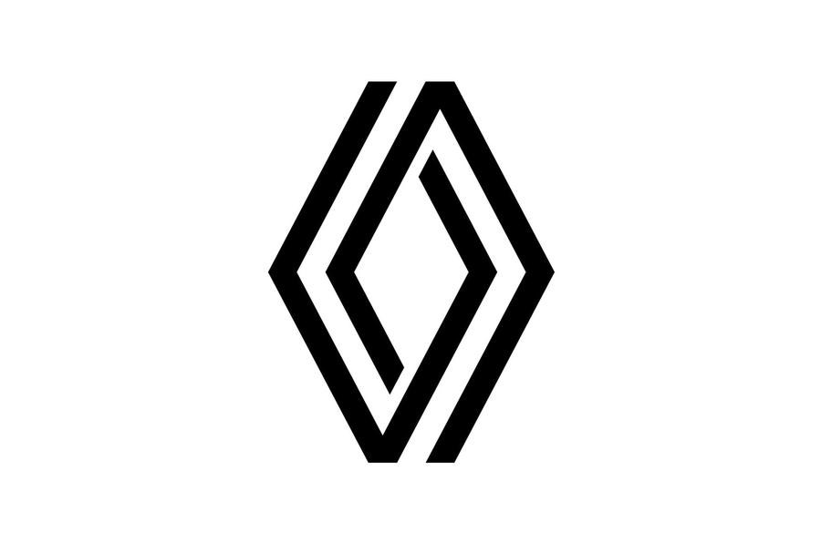